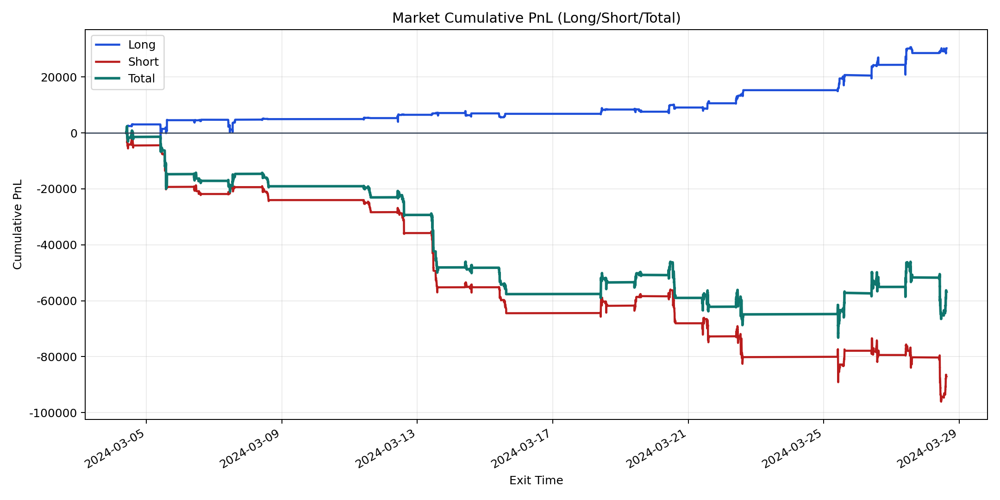
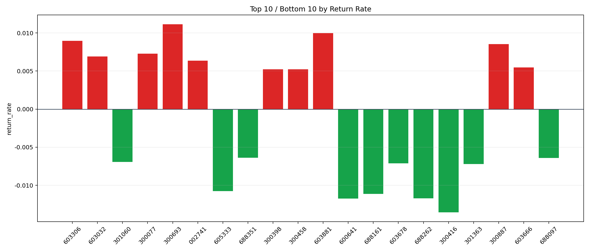

| repo_root | /home/haoranyou/data/output/alpha0.4_1w_5s_3ticks_index_filter/index_weights_1000 |
|---|---|
| period_months | 1 |
| period_label | 2024-03-04_to_2024-03-28 |
| start_time | 2024-03-04 09:50:27 |
| end_time | 2024-03-28 14:59:55 |
| n_trades | 15954 |
| n_symbols | 250 |
| total_pnl | -56804.23359999994 |
| long_total_pnl | 30248.476000000028 |
| short_total_pnl | -87052.70959999997 |
| total_entry_notional | 149938339.0 |
| long_entry_notional | 35641630.0 |
| short_entry_notional | 114296709.0 |
| total_return_rate | -0.00037885062605635467 |
| long_return_rate | 0.0008486838564902904 |
| short_return_rate | -0.0007616379365743591 |
| top_symbols_by_return | ["300693", "603881", "603306", "300887", "300077", "603032", "002741", "603666", "300458", "300398"] |
| bottom_symbols_by_return | ["300416", "600641", "688262", "688161", "605333", "301363", "603678", "301060", "688097", "688351"] |

